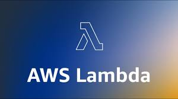
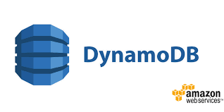
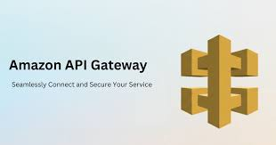
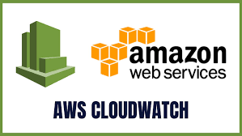
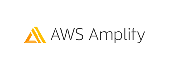
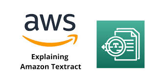
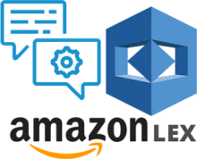

☁️ AWS Cloud Services
Core Learning at AM/NS India · 13 AWS microservice components explored with analogies, architecture context, and real-world use cases.
Services Covered
Amazon EC2
💡 Renting a flat instead of buying a house — you control everything inside, AWS owns the building.
What it is: Virtual servers in the cloud with full control over OS, software, and config.
Why it helps: Eliminates upfront physical server costs — scale up at peak, scale down when quiet.
Real Life: AM/NS runs backend applications on EC2 — always on, accessible to all employees.

AWS Lambda
💡 A smart sensor light — off and $0 cost until triggered, runs for a moment, then shuts down automatically.
What it is: Serverless compute — runs code without provisioning any server.
Why it helps: Zero cost when idle. Auto-scales from 1 to millions of requests with no configuration.
Real Life: Instagram uses Lambda-style processing to resize photos the millisecond a user uploads them.
Amazon S3
💡 An infinite safety vault that never fills up — store millions of files and retrieve any one instantly from anywhere.
What it is: Infinite object storage for any file type — images, PDFs, videos, logs, backups.
Why it helps: Files replicated across multiple data centers — 99.999999999% durability guaranteed.
Real Life: AM/NS stores equipment manuals, safety documents, and scanned invoices in S3.

Amazon DynamoDB
💡 A super-speed address book that finds one record out of 10 billion rows in under a millisecond — at any scale.
What it is: Fully managed NoSQL database with single-digit millisecond response times.
Why it helps: Handles millions of reads/writes per second — scales automatically with no config.
Real Life: Netflix uses DynamoDB to load watchlists for 200 million+ users simultaneously.

Amazon API Gateway
💡 A security check desk at a corporate entrance — every visitor is verified before being directed to the right department.
What it is: Managed front door for all backend APIs — handles routing, auth, and rate limiting.
Why it helps: Hides and protects backend services from direct internet exposure.
Real Life: All employee app requests at AM/NS pass through API Gateway before reaching Lambda or DynamoDB.
AWS IAM
💡 An office keycard system — each employee can only enter the rooms they need. No master key, no over-access.
What it is: Identity and access management — controls who can do what on which AWS resources.
Why it helps: Principle of least privilege — minimum access only, reducing breach risk dramatically.
Real Life: AM/NS HR app accesses only HR data. Production app accesses only production data.

Amazon CloudWatch
💡 A car dashboard — shows engine speed, temperature, and fuel in real time, and warns you before something breaks.
What it is: Monitoring service collecting logs, metrics, and alarms from all AWS services.
Why it helps: Alerts engineers automatically before end users even notice a problem.
Real Life: AM/NS production systems monitored 24/7 — failures trigger immediate SMS alerts.
Amazon EventBridge
💡 Smart home automation — IF motion detected THEN turn on lights and start camera. Automatic, instant, no polling.
What it is: Serverless event bus connecting AWS services using IF-THEN event-driven triggers.
Why it helps: Services react only when something happens — no wasted compute constantly checking for updates.
Real Life: Document approved at AM/NS → EventBridge notifies manager + archives to S3 + updates DynamoDB.

Amazon Bedrock
💡 A menu of AI chefs — access Claude, Llama, Titan and more through one API without training any model yourself.
What it is: Managed AI service giving access to multiple foundation models through a single API.
Why it helps: No model training needed — plug in and build AI features in minutes.
Real Life: AM/NS internal chatbot answers employee questions about safety procedures using company documents.

AWS Amplify
💡 A ready-made construction kit — walls, wiring, and plumbing pre-built so you just assemble instead of building from scratch.
What it is: Full-stack development platform — sets up auth, storage, APIs, and hosting automatically.
Why it helps: Frontend developers can build complete cloud-connected apps without configuring each service manually.
Real Life: AM/NS employee portals with login, document access, and dashboards built via Amplify.

Amazon Textract
💡 A scanner that doesn't just photograph a document — it reads it, understands the structure, and extracts every field as usable data.
What it is: AI service that automatically extracts text, tables, and form fields from scanned documents.
Why it helps: Eliminates manual data entry from paper invoices, forms, and scanned PDFs entirely.
Real Life: Supplier invoices at AM/NS scanned → Textract extracts all fields → feeds into ERP system.
AWS Secrets Manager
💡 A bank vault for passwords — only authorised apps can retrieve specific secrets, every access is logged, contents rotate automatically.
What it is: Secure storage for passwords, API keys, and credentials — retrieved at runtime, never hardcoded.
Why it helps: Automatic rotation — passwords change periodically without any code changes or downtime.
Real Life: AM/NS database passwords never written in any code — Lambda fetches them securely at runtime.

Amazon Lex
💡 The brain behind Alexa — embedded directly into your own app to understand and respond to what users say or type.
What it is: Conversational AI service for building chatbots and voice assistants using natural language.
Why it helps: Users type in plain language — Lex understands the intent and triggers the right action.
Real Life: AM/NS HR chatbot — employees ask "How many leaves do I have?" and get instant answers without calling HR.
📁 Internship Learning Deliverables
Presentation · PDF
Introduction to AWS Cloud Services
A 22-slide presentation covering all 13 AWS services used at AM/NS India — with simple analogies, real-world examples, workflow diagrams, and key takeaways.
⬇ Download PPT
Report · PDF / DOCX
AWS Cloud Services — Internship Report
A detailed 12-page internship learning report covering AWS fundamentals, global infrastructure, all 13 core services, architecture overview, and key learnings.
⬇ Download Report